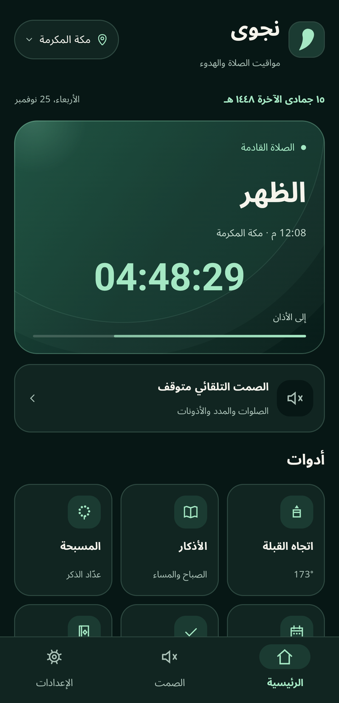
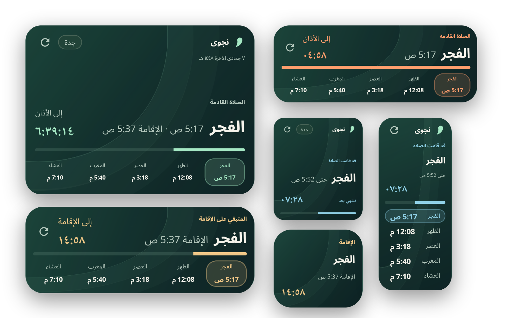
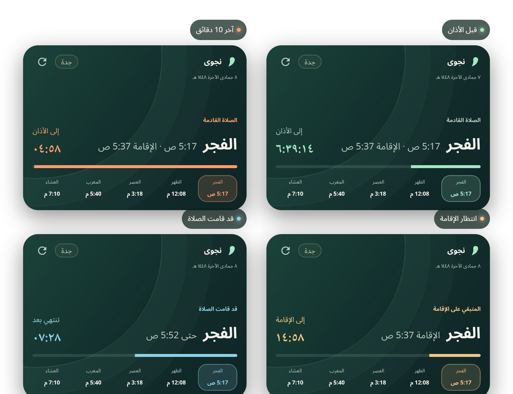
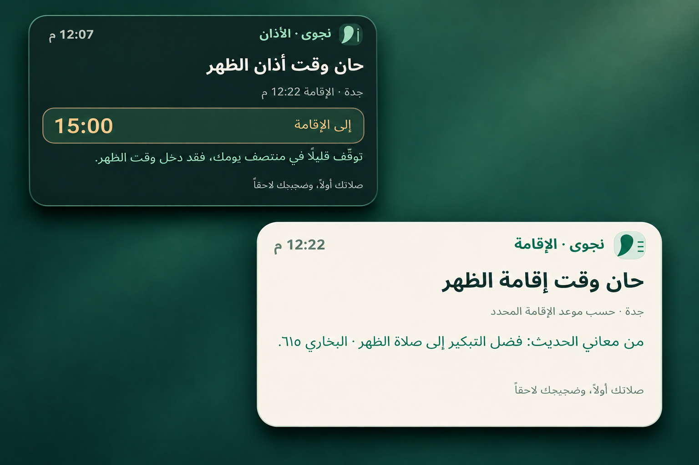
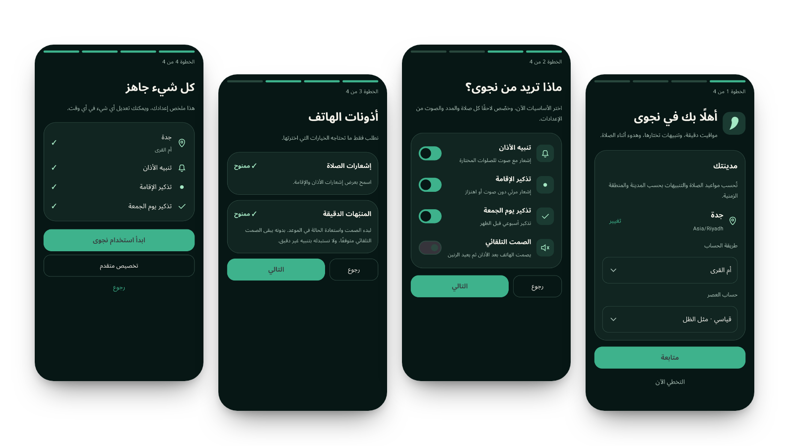

ويدجت بمراحل الصلاة
قبل الأذان، وآخر 10 دقائق، وانتظار الإقامة، ثم «قد قامت الصلاة»؛ لكل مرحلة لونها وعبارتها في كل المقاسات.
نجوى 1.3.0 · ويدجت يعيش الصلاة معك
للحظة الصلاة مكانها. مواقيت دقيقة، وتنبيهات مدروسة، وويدجت يرافقك من الأذان حتى قيام الصلاة، وهدوء تختاره.
تنزيل مباشر · Android 8.0 فأحدث · مجاني ومفتوح المصدر

الجديد في 1.3.0
إصدار يعيد تصميم الإشعار والويدجت والإعداد الأول، دون أن يفقد نجوى أيًّا من خيارات التخصيص.
قبل الأذان، وآخر 10 دقائق، وانتظار الإقامة، ثم «قد قامت الصلاة»؛ لكل مرحلة لونها وعبارتها في كل المقاسات.
يملأ البطاقة ويتبع سمة هاتفك، مع عدّاد حيّ إلى الإقامة وزر «إيقاف الأذان».
المدينة، ثم ما تريده من نجوى، ثم الأذونات اللازمة فقط، ثم ملخص جاهز.
«الإعدادات السريعة» في الأعلى، وأقسام قابلة للطي، وزرّا تجربة للأذان والإقامة.
تجربة نجوى
وضوح في الواجهة. حضور على شاشتك. وتذكير في موعده.
اختر المظهر الفاتح أو الداكن، وتابع الصلاة القادمة والإقامة من واجهة تمنح كل معلومة مساحتها.
سبعة مقاسات بلغة تصميم واحدة: عدّاد واضح، وشريط يمتلئ كلما اقتربت الصلاة، ومواقيت اليوم الخمس مع إبراز الصلاة القادمة.

يتبدّل لون الويدجت وعبارته مع كل مرحلة، ثم ينتقل تلقائيًا إلى الأذان التالي بعد انتهاء مدة الصلاة التي حددتها.

عنوان الصلاة، وموعدا الأذان والإقامة، والمدينة، ورسالة الصلاة، وعدّاد حيّ إلى الإقامة. واضغط «إيقاف الأذان» ليتوقف الصوت ويبقى العدّاد.

إعداد أول يطلب فقط ما تحتاجه اختياراتك، ثم «تخصيص متقدم» يأخذك إلى كل التفاصيل: لكل صلاة، والمدد، والصوت، والمظهر.

بداية مطمئنة
خطوات قصيرة، لتكون التجربة كما تحب.
العربية · English · Bahasa Indonesia
اردو · বাংলা · हिन्दी · Türkçe
نزّل ملف APK وثبّته. اسمح بالتثبيت من مصدر التنزيل إذا طلب Android ذلك.
أكّد مدينتك أو اخترها من أكثر من 459 ألف مكان، واختر طريقة الحساب وحساب العصر.
فعّل الأذان والإقامة والجمعة والصمت التلقائي، وامنح الأذونات اللازمة فقط.
أضف الويدجت إلى الشاشة الرئيسية، واضبط مدة الإقامة والصمت لكل صلاة حسب مسجدك.
مساحة للسكينة، في يومك
الإصدار 1.3.0 · البناء 114 · ملف موقّع بحجم 18.5 ميبيبايت
بصمة SHA-256 لملف هذا الإصدار:
9b9b88b59a71154b9a549ab389bc5c2556b98346c523f776065c821600ffd2abنجوى مفتوح المصدر بترخيص Apache 2.0. يمكنك الاطلاع على الشفرة وتعديلها والمساهمة في تحسينها. لا حسابات، ولا إعلانات، ولا أدوات تتبع.
ساهم في نجوى على GitHub ↗بيانات الأماكن من GeoNames. الإقامة حسب إعدادك وليست موعدًا معتمدًا للمسجد.